6．第六篇：相似形
第六篇里利用第五篇的比例理论讨论相似形。它是从定义开始的，我们只举出几个：
定义1．相似直线图形是对应角相等且对应边成比例的那些图形。
定义3．当一线段被分成两段，且整段与较大分段之比等于较大段与较小段之比时，就说此直线被分为外项与中项比。
定义4．任一图形之高是从其顶点到底边的垂线。
这定义肯定是含糊的，但欧几里得没有用它。
在证明本篇中的定理时，欧几里得用他的比例理论而没有把可公度和不可公度的情形分别讨论。这种分开来进行讨论的做法是勒让德第一个采用的，他用比例的代数定义，但只限于可公度的量，然后再用别的推理如归谬法之类来处理不可公度的情形。
我们只打算从33个定理中举出几个来。这里我们仍然可以看到他用几何来处理现代代数里的几个基本结果。
命题1．等高的三角形和等高的平行四边形［的面积］之比等于它们的底边之比。
这里欧几里得所用比例的四个量中有两个量是面积。
命题4．在各角对应相等的两个三角形里，夹等角的边以及等角所对的相应边都成比例。
命题5．若两三角形的边成比例，则两三角形有同样的角且此两三角形对应边所对之角相等。
命题12．从三根已给直线求其比例第四项。
命题13．求两根已给直线的比例中项。
这方法是大家熟知的（图4.13）。这从代数上讲就是，给定a和b，可求得
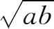
。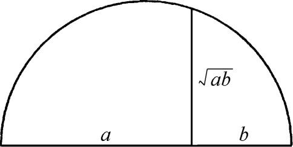
图4.13
命题19．相似三角形［面积］之比等于其对应边的二次比。
这定理现在的说法是：两相似三角形面积之比等于其两对应边的平方之比。
命题27．同一直线［一分段］上所作的所有平行四边形，其［在整个直线段上平行四边形所余部分形成的］亏形与半直线段上一平行四边形相似者，以该半直线段上所作且相似于亏形的那个平行四边形（的面积）为最大。
这命题的意思如下：先从所给线段AB的一半AC上的所给平行四边形AD开始（图4.14）。然后考察AB的另一段AK上的一个平行四边形AF，它的亏形（即FB）是相似于AD的一个平行四边形。适合AF这种条件的平行四边形当然可以作出许多来。欧几里得这个定理说，在所有这样的平行四边形中，作在AB之半AC上的那个面积最大。
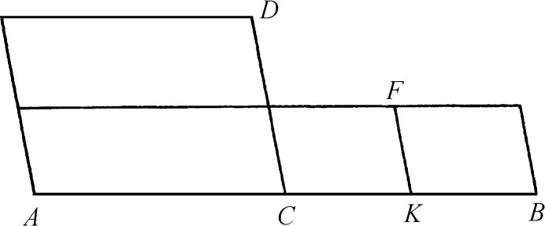
图4.14
这命题有一个重要的代数意义。设所给平行四边形AD是个矩形（图4.15），并设其两边之比为c比b（b＝AC）。现考察矩形AF，要使它的亏形（矩形FB）满足相似于AD的条件。若记FK为x，则KB为bx/c。令AB之长为a，则AK＝a-（bx/c）。因此AF的面积S是
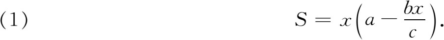
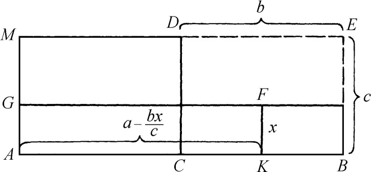
图4.15
命题27说当AF为AD时面积最大。但AC＝a/2，于是CD＝ac/2b，因此
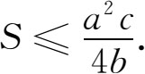
另一方面，（1）作为x的二次方程，它有一个实根的条件是它的判别式大于或等于零，即
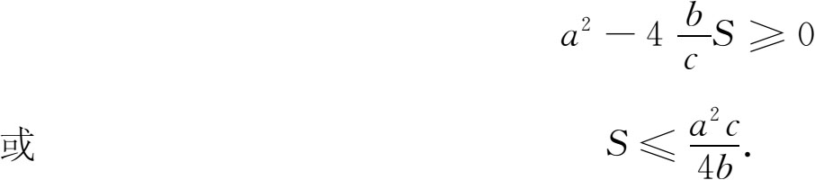
所以这命题不仅告诉我们S可能有的最大值是什么，并且告诉我们对一切可能的S值能有一个x满足（1），从几何上讲它给出了矩形AF的一边KF。这结果在下面的命题中要用到。
在讲下一命题之前，我们来指出命题27的一个有趣的特殊情形。设所给平行四边形AD（图4.15）是个正方形，则AB上所有矩形其亏形为相似于AD的正方形，当以AC上的正方形为最大。但AB（一部分）上矩形AF的面积是AK·KF，而由于KF＝KB，故此矩形的周长等于正方形DB或正方形AD的周长。但AD的面积大于AF。故知有相同周长的矩形中以正方形面积最大。
命题28．在所给直线［一部分］上作一平行四边形与所给直边形［S］等面积，且使其［不足于整段直线上的平行四边形的］亏形相似于所给平行四边形［D］。因此［根据命题27］所给直边形［S的面积］必不能大于半段直线上相似于亏形的那个平行四边形。
这定理是解一个二次方程
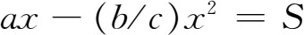
的几何上的等价说法，这里S是所给直边形面积，但须满足S不得大于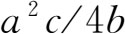
这个条件才有实解。为指明这一点，设（为方便起见）平行四边形是矩形（图4.16），S是所给直边形，D是另一以c及b为边的矩形，a是AB，x是所要求的那个矩形的一边。欧几里得所作出的是那么一个矩形AKFG，其面积为S，其亏形D′相似于D。但AKFG＝ABHG-D′。因D′相似于D而面积为bx2/c。因此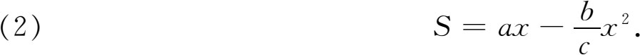
所以求作AKFG一事就是求AK和满足方程（2）的x。
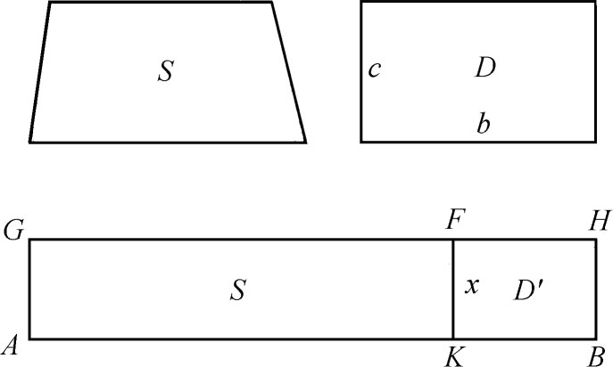
图4.16
命题29．在一所给直线上作一平行四边形，使其面积等于所给一直边形［S］（的面积），并使其超出整段直线上的那部分平行四边形与一给定的平行四边形［D］相似。
用代数语言来说，这定理解出了
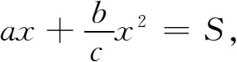
其中a，b，c和S是给定的。这里S不受限制，因对于一切正的S方程都有实解。欧几里得用命题28及29所指出的，用现代语言来说，就是怎样求解任一（当其具有一个或两个正的根时）二次方程的问题。他的作法以长度的形式给出了方程的根。
在命题28里，所作平行四边形未占满AB全线，而在命题29里，所作平行四边形超出所给的AB线。这两类平行四边形在希腊文里分别叫elleipsis和hyperbolè（亏的和超的）。在整个线段上所作具有规定面积的平行四边形（如第一篇命题44中所述者）叫parabolè（齐的）。这些名词以后就移用到圆锥曲线上去，其理由在讨论阿波罗尼斯的工作时将看得很明显。
命题31．直角三角形斜边上的一直边形，其面积为两直角边上两个与之相似的直边形面积之和。
这是毕达哥拉斯定理的一个推广。